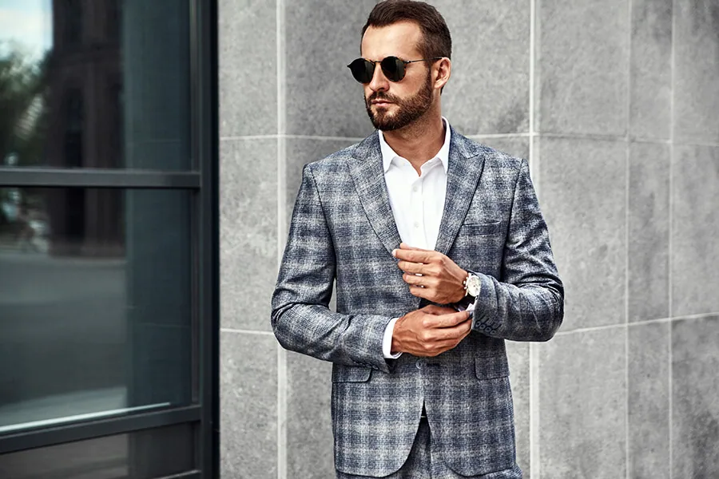
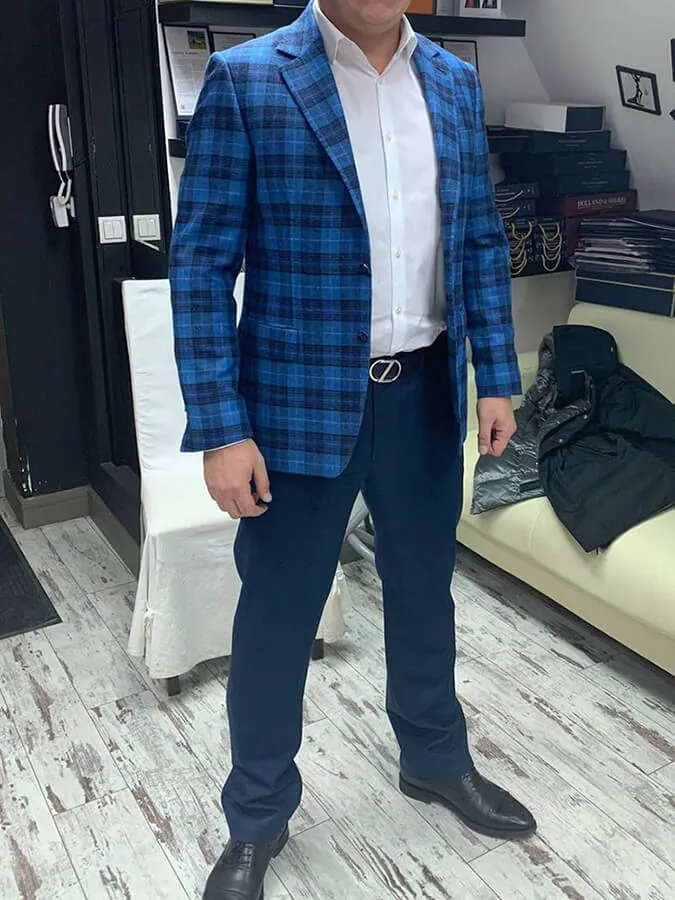
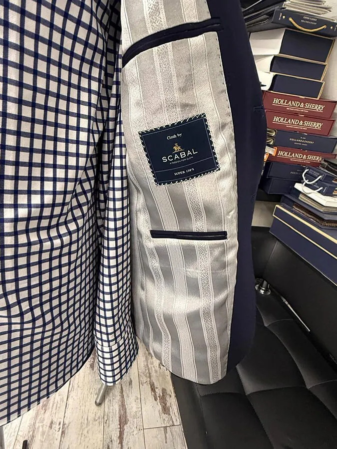

Костюмы
от 160 000 ₽ · 45 дней
Москва · С 1998 года
Шьём костюмы, пальто и сорочки по индивидуальным лекалам в нашем ателье на Тверской.

Первая встреча · 1 час
Примеряем образцы ткани к сорочке, выбираем фасон и фурнитуру. По вашим меркам портной строит лекала. На следующей встрече уже проверяем, как сидит собранное изделие.
Как проходят примеркиТкань входит в начальную стоимость каждого изделия.
Готовые изделия, подкладка и детали кроя из галереи ателье.

По крупной клетке видно, как рисунок переходит с полочки на рукав.
Мужской костюм
Тёмные лацканы на красном фоне показывают, как отделка меняет вид пиджака.
Непарный пиджак
Открытая полочка позволяет рассмотреть подкладку и обработку борта.
Непарный пиджак
На воротнике и планке особенно хорошо виден масштаб клетки.
Мужская сорочка
Ткани в ателье
В наших каталогах больше 5 000 образцов. Для деловой двойки сравним костюмную шерсть, для летней сорочки — хлопок и лён, для пальто — кашемир и твид.
Holland & Sherry, Loro Piana, Scabal, Dormeuil, Ariston Napoli и Ermenegildo Zegna.
Посмотреть тканиТехнология bespoke
Выбираем изделие, ткань и фурнитуру. Мастер снимает мерки, затем строит персональные лекала.
Надеваем собранную вещь. Проверяем свободу движения, длину и баланс, намечаем корректировки.
Проверяем посадку после доработки. Готовое изделие можно забирать.
Выберите изделие и ткань. В подборке будут начальная цена, срок пошива и детали для обсуждения с портным.
от 160 000 ₽ с тканью · 45 дней

Портновское дело
Форму борту придаёт внутренняя бортовка. При пошиве bespoke мастера ателье выполняют около 70% работы вручную. Намётка держит детали вместе, пока портной проверяет посадку.
Об ательеВ гостях у ателье
Принимаем по предварительной записи по телефону или в WhatsApp.
Это демоформа. Данные остаются на этой странице и не отправляются в ателье. Реальная запись не создаётся.
Поля заполнены. Данные никуда не отправлены. Для настоящей записи свяжитесь с ателье по телефону или в WhatsApp.